Modular
One light, three mounts.
Heads twist on, necks slide in, feet press in, so every add-on fits one light.
3 mounts · 7 add-ons · 1 light
Every LUMIX+ add-on,
made to fit one
small light.
1 light · 7 add-ons · Scroll
People · Travel · Place
A flashlight for people who travel constantly.
5 kinds of travelers · 7 trips · 1 light
One light, three mounts.
Heads twist on, necks slide in, feet press in, so every add-on fits one light.
3 mounts · 7 add-ons · 1 light
A series, not a single.
Each add-on has its own number, color and box, and Vol.1 opens a growing set.
1 series · 7 colors · 7 boxes
Hotel room to trailhead.
Seven trips in seven places: the add-on changes, and the light stays the same.
7 trips · 7 places · 1 light
74 mm long · 18 mm across
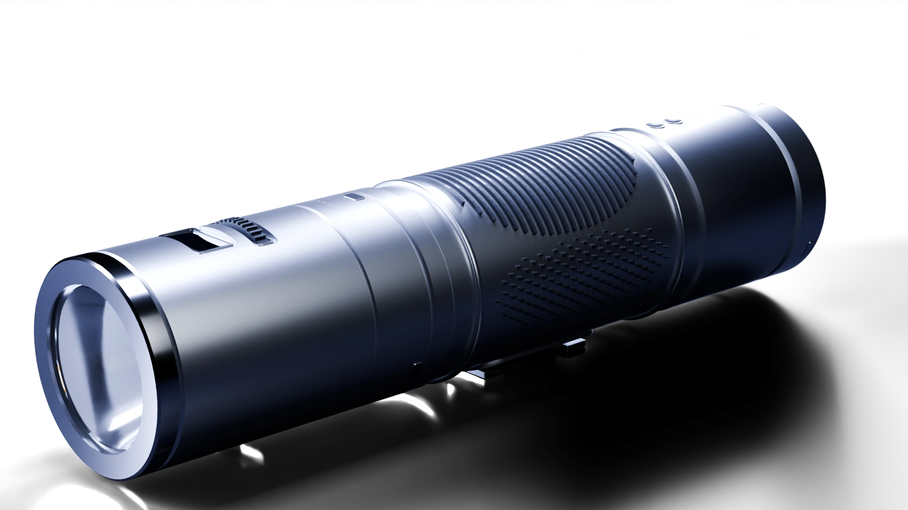
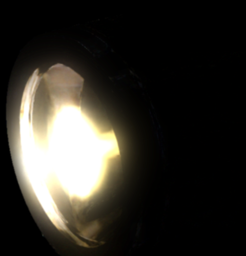
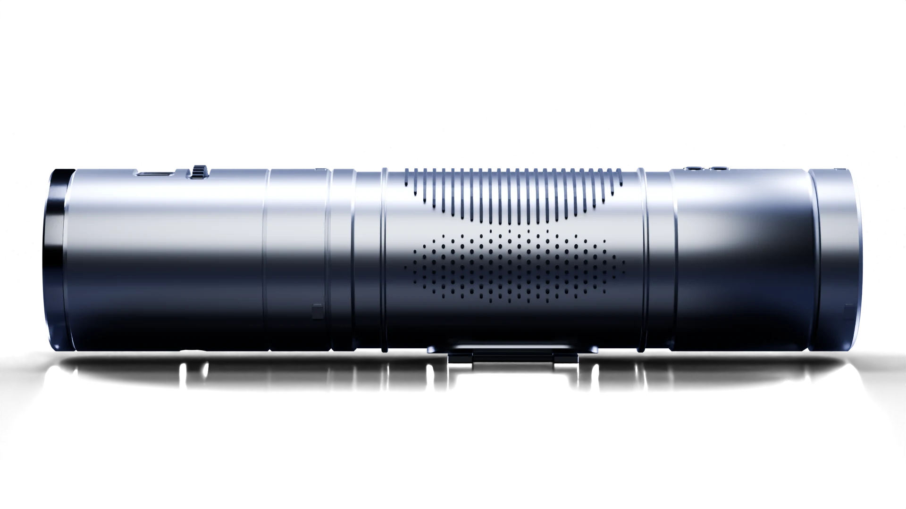
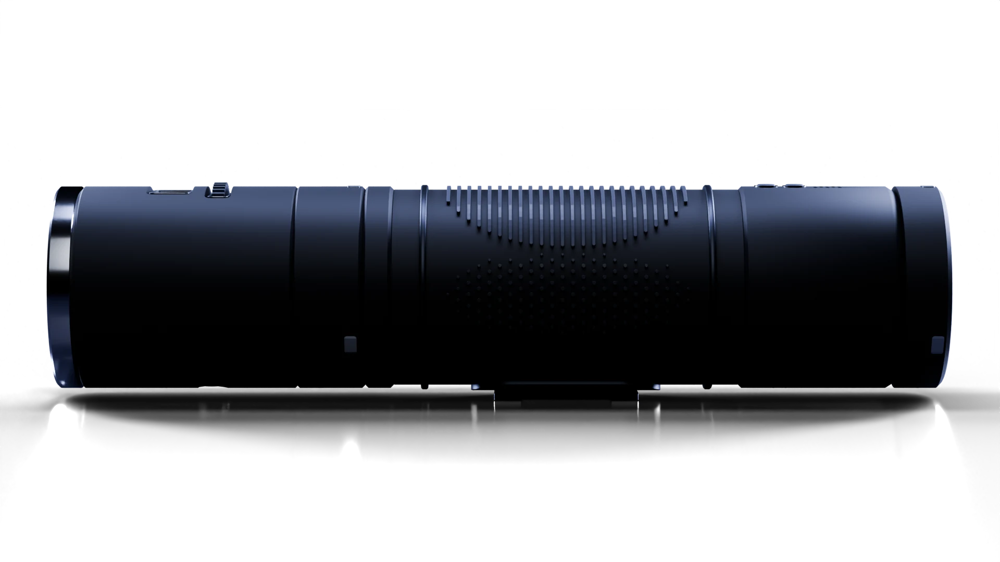
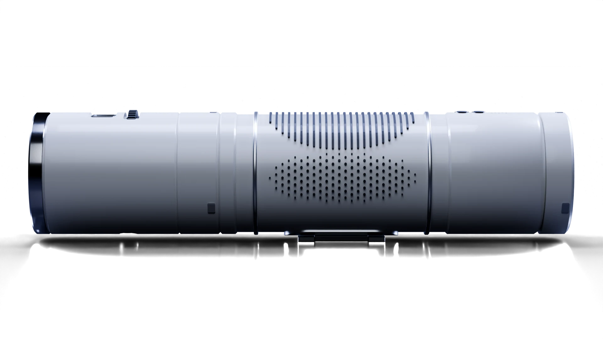
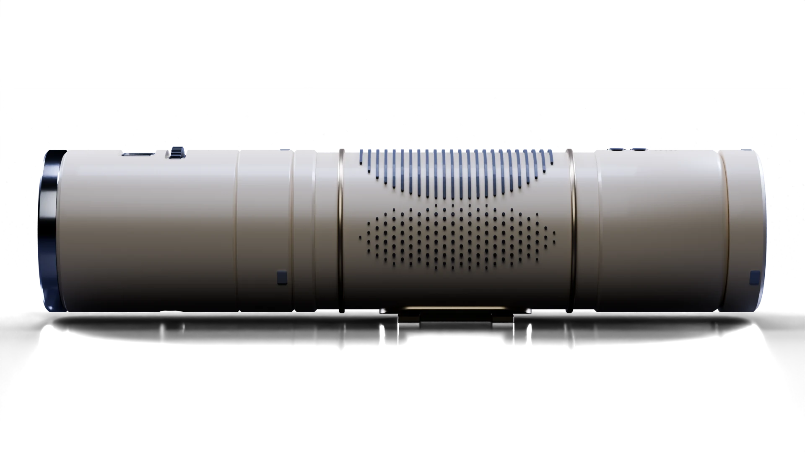
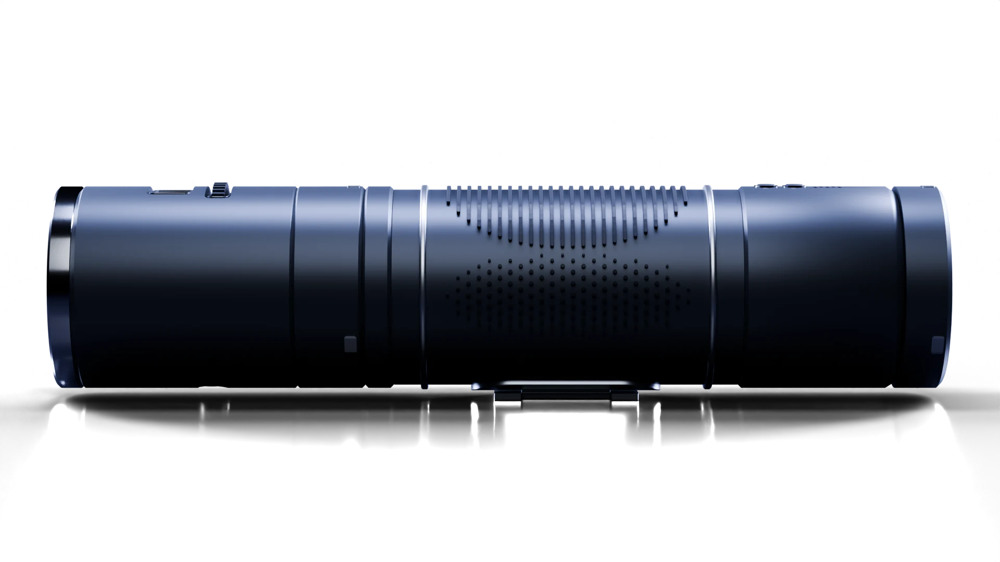
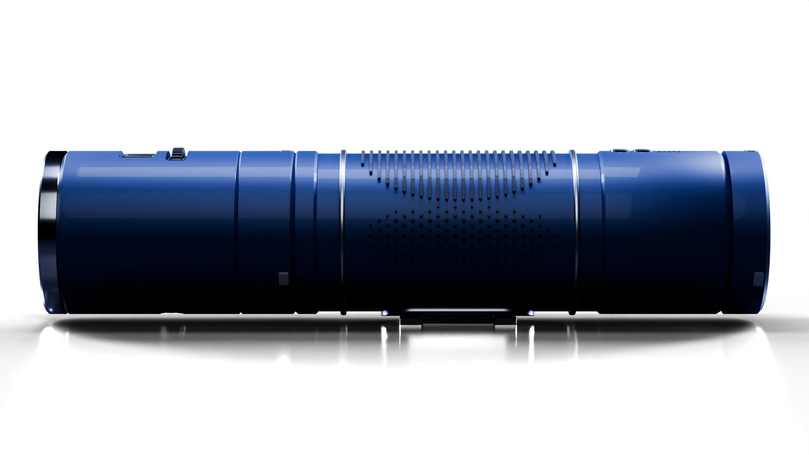
01PowerThumb wheel
01 / 03
20 parts · Scroll to take it apart
Heads · Necks · Feet
Campaign · Retail box
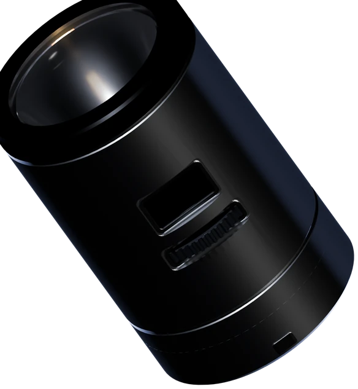
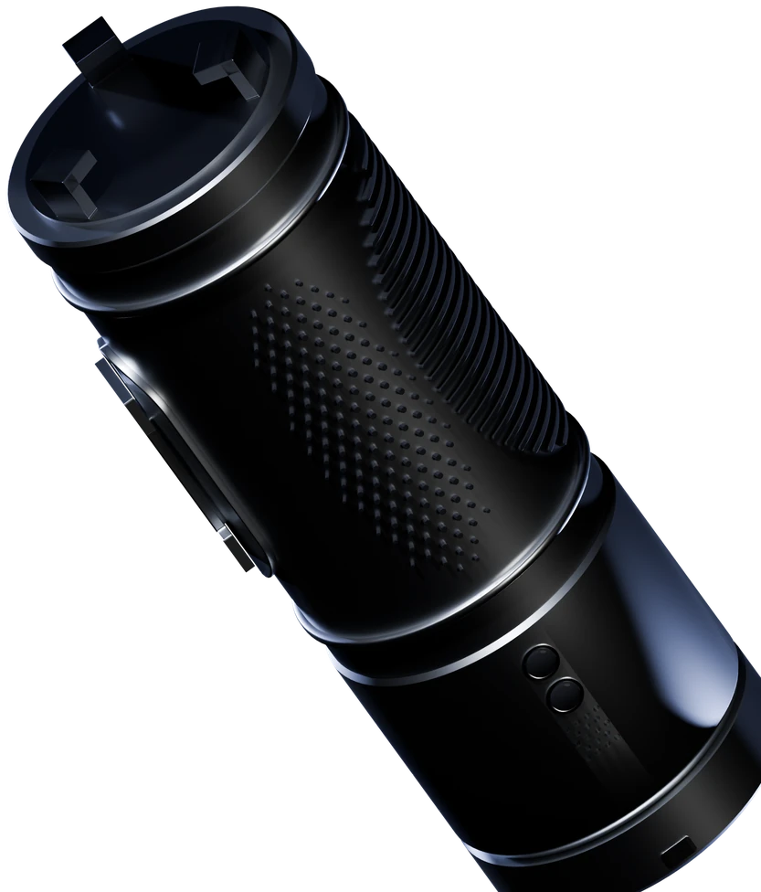
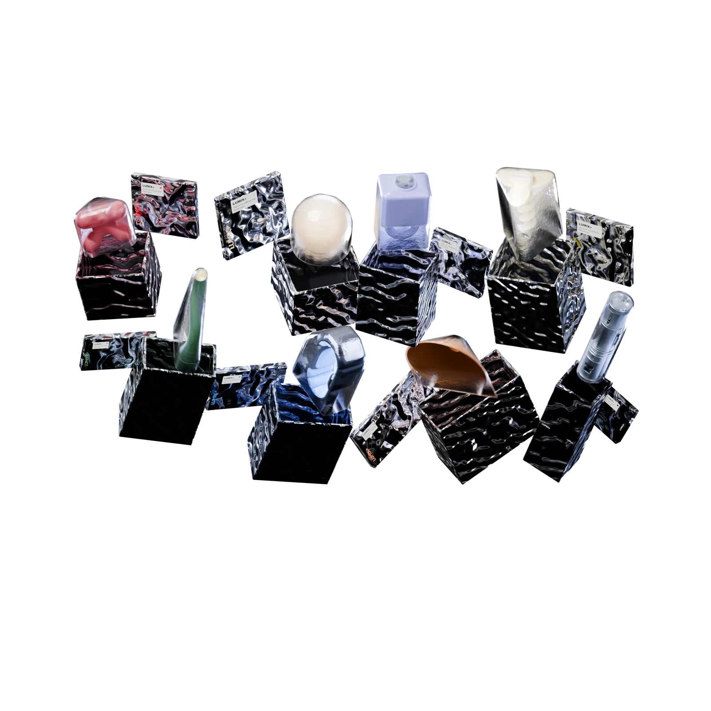
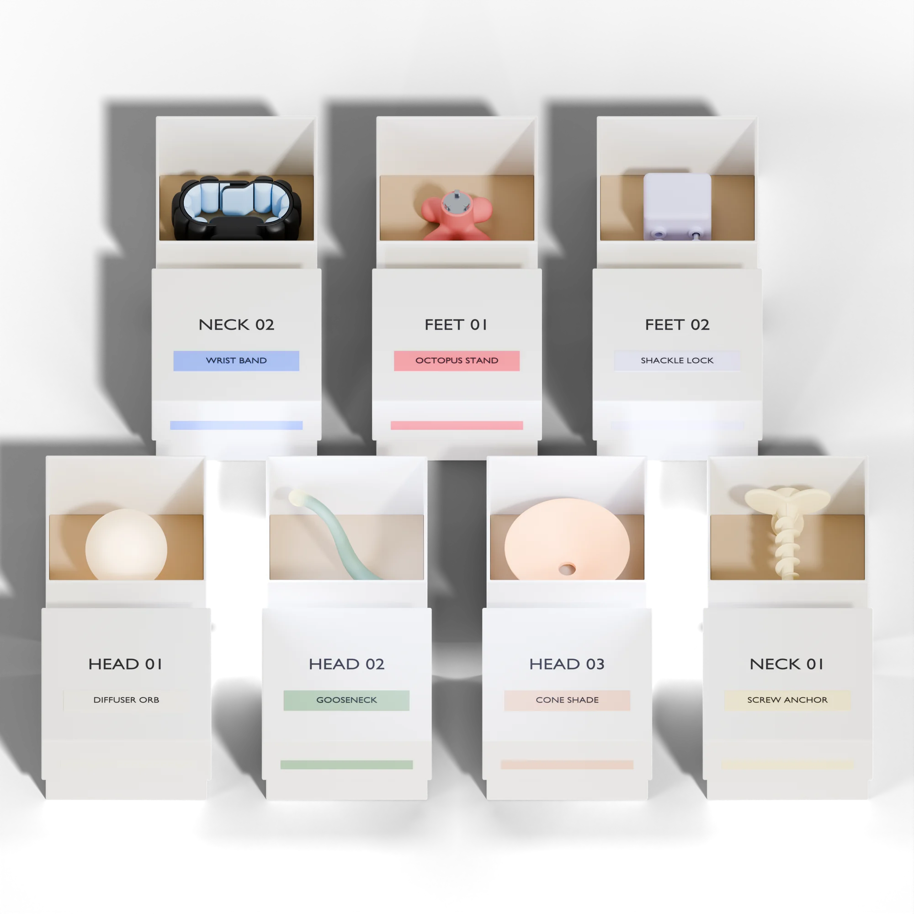
7 add-ons · 6 body colors
Process · Vol.1
Vol.1 of a growing set of product-design tools. Every add-on is modeled, lit and rendered by script, so the next volume starts from the same framework.
Seven colors · Pick one to tint the page
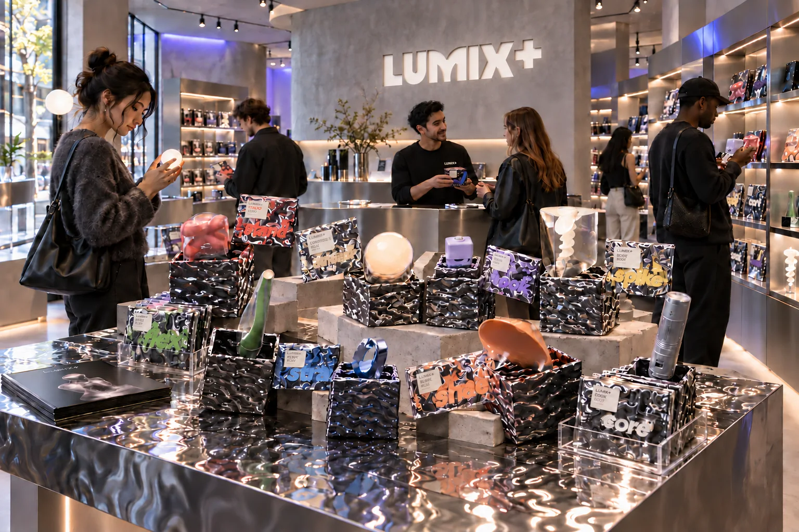
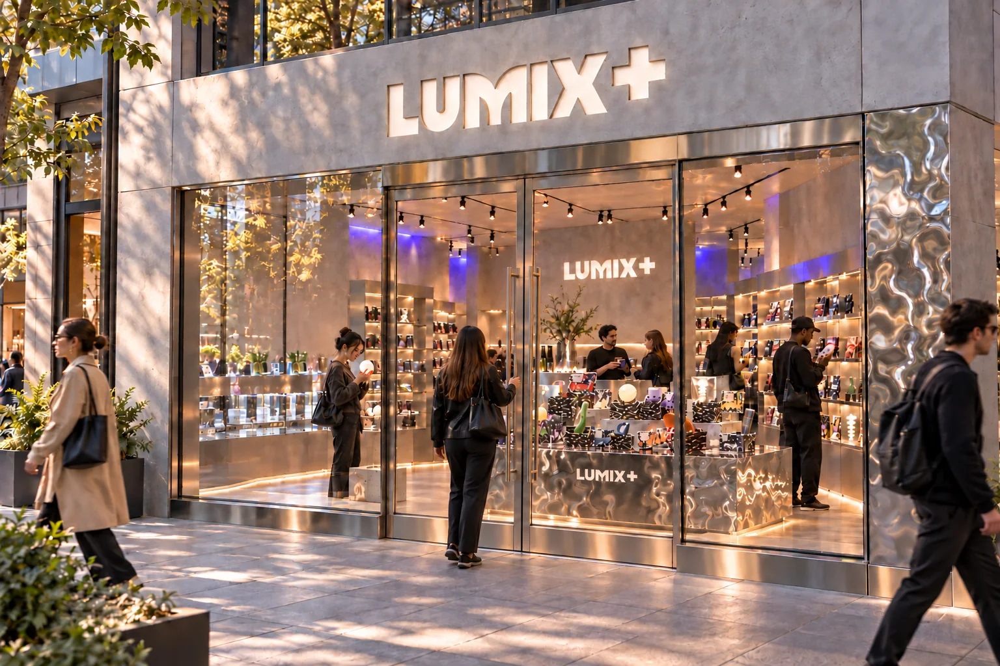